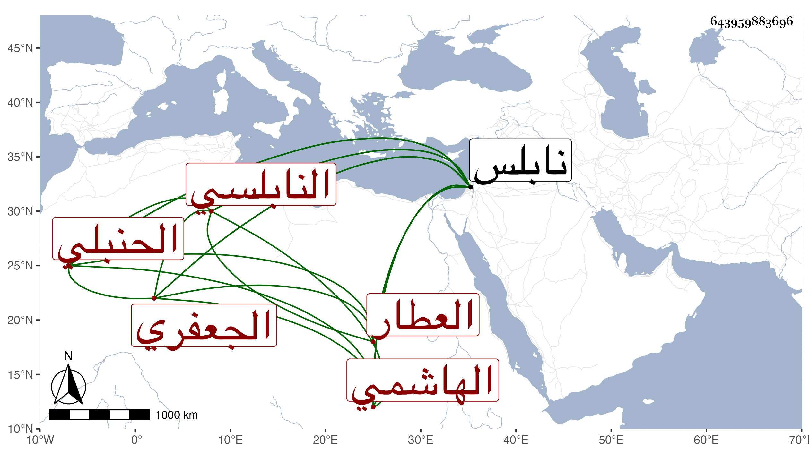

0902Sakhawi.DawLamic.ITO20230111-ara1.EIS1600.643959883696
Biography ID: 643959883696
إبراهيم بن محمد بن إبراهيم البرهان أبو إسحاق الهاشمي الجعفري لكونه كان يذكر أنه من ذرية علي بن عبد الله بن جعفر بن أبي طالب النابلسي الحنبلي العطار أخو علي الآتي ويعرف بابن العفيف . ولد سنة أربعين وسبعمائة وسمع على العلائي وابن الخباز والميدومي والقطب أبي بكر بن المكرم ومحمد بن هبة الله الشافعي ومحمد بن غالب الماكسيني وقاسم بن سليمان الأذرعي إمام قبة موسى بالمسجد الأقصى والشمس محمد بن عبد الواحد بن طاهر المقدسي في آخرين ومما سمعه على الأول الموافقات العالية والأبدال الحالية من تخريجه لنفسه وعلى الثاني قطعة من مسند أحمد وصحيح مسلم وجزء ابن عرفة أو منتقى منه وعلى الثالث الكثير . وأجاز له خلق وحدث سمع منه الأئمة وقد لقيه شيخنا بنابلس فحدثه بأحاديث منتقاة من جزء ابن عرفة . وكذا سمع عليه التقي أبو بكر القلقشندي وروى لنا عنه . مات في سنة أربع وعشرين بنابلس وهو في الأول من معجم شيخنا باختصار عن هذا .
